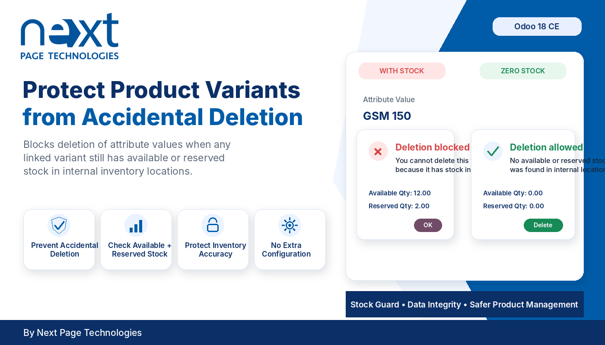
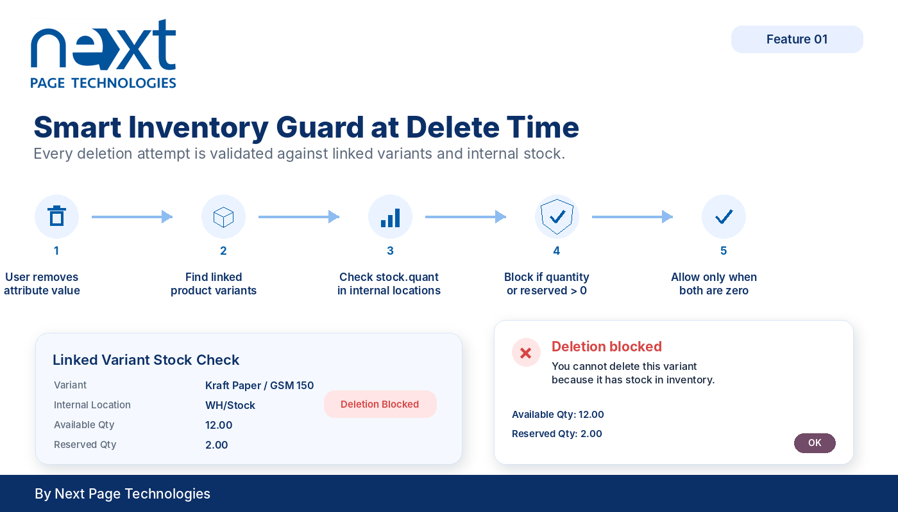
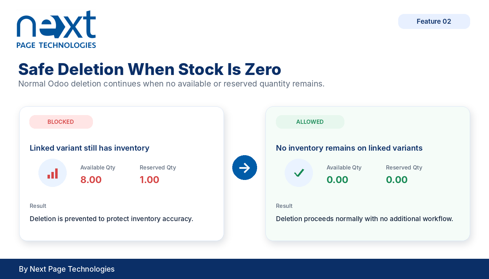

Odoo Products and Inventory
Product Attribute Variant Stock Guard prevents deleting product template attribute values when linked variants still have on-hand or reserved stock in internal inventory locations. It adds a focused validation rule to Odoo Products and Inventory so variant data cannot be removed while stock still exists.
This addon extends `product.template.attribute.value` deletion behavior. When a user attempts to delete a product template attribute value, the addon checks the variants linked to that value. If any linked variant has positive quantity or reserved quantity in an internal stock location, deletion is stopped with a clear Odoo warning.
Checks variants linked to the product template attribute value before allowing deletion.
Blocks deletion when a linked variant has positive quantity in an internal inventory location.
Blocks deletion when a linked variant has reserved quantity in an internal inventory location.
Shows an Odoo user error explaining that the variant cannot be deleted because it has stock in inventory.
No configuration menu is added by this addon. Install it with Product and Inventory enabled, and the deletion validation is applied automatically when product template attribute values are removed.
The addon checks linked product variants and prevents deletion when stock exists in internal inventory locations.

Both on-hand quantity and reserved quantity are checked for linked product variants in internal stock locations before allowing the delete operation.

This addon restricts deletion of product template attribute values when linked variants have stock. It does not add new stock reports, change stock valuation, restrict product archiving, or create new product attribute workflows.
Next Page Technologies Pvt Ltd
https://nextpagetechnologies.com
Next Page Technologies Pvt Ltd
https://nextpagetechnologies.com